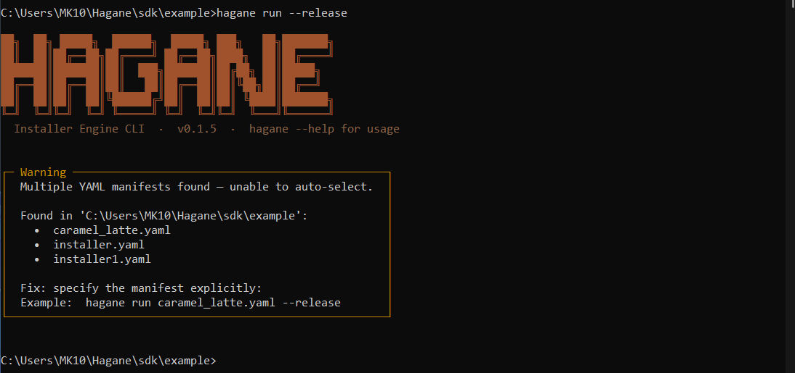
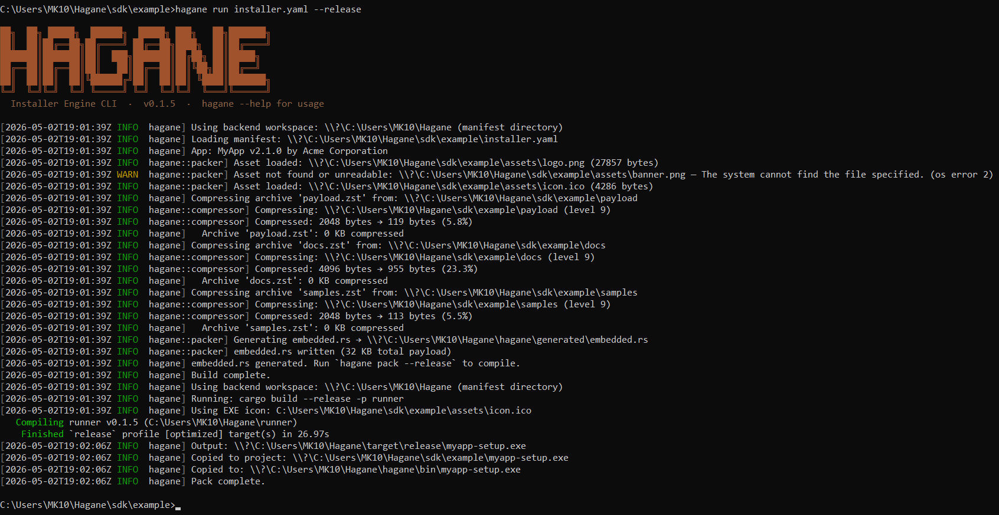
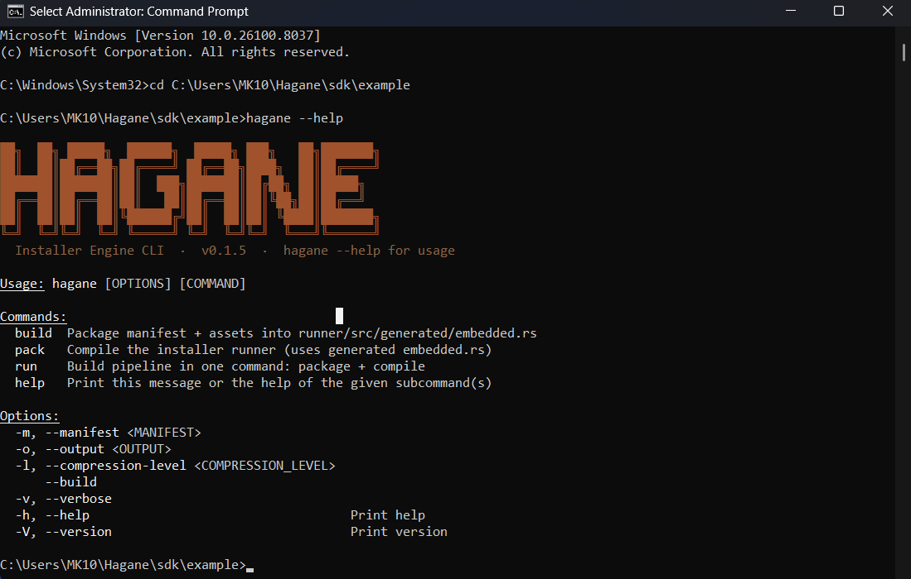
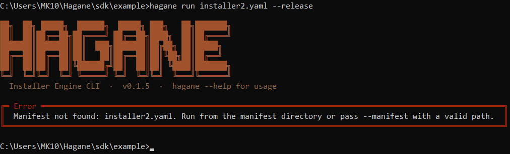
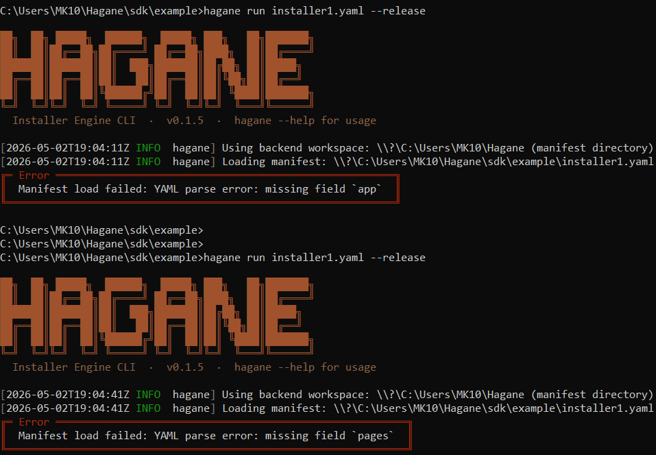

Installer Engine Documentation
Installer Engine is a YAML-driven Windows installer framework built in Rust. It combines a native backend (requirements checks, install plan execution, rollback) with a WebView2 UI layer and the `hagane CLI for packaging and compilation.
Why
| Problem with NSIS | This engine |
|---|---|
| PowerShell/CMD for system checks -> slow, laggy | Native WinAPI calls only — microseconds |
| Fixed UI with limited branding | WebView2 HTML/CSS — fully brandable |
| Script language with no type safety | YAML with JSON Schema validation + IDE autocomplete |
| No parallel processing | Requirement checks run in parallel via Rayon |
| Bloated runtime | Pure Rust binary, no .NET/runtime dependency |
Quick Start
1. Write your manifest
# sdk/example/installer.yaml
app:
name: "MyApp"
version: "1.0.0"
publisher: "Your Company"
logo: "assets/logo.png"
default_install_dir: "{{PROGRAMFILES64}}/YourCompany/MyApp"
theme:
accent_color: "#0078D4"
pages:
- type: welcome
- type: license
- type: requirements
- type: install_dir
- type: install
- type: finish
requirements:
- type: os
platform: windows
min_build: 18362
label: "Windows 10 1903+"
- type: ram
min_mb: 2048
label: "2 GB RAM"
- type: disk
min_mb: 200
label: "200 MB free space"
install:
setup:
create_dirs:
- "{{INSTDIR}}"
components:
core:
archive: "payload.zst"
target: "{{INSTDIR}}"
system:
shortcuts:
- name: "MyApp"
target: "{{INSTDIR}}/MyApp.exe"
location: desktop
finalize:
write_uninstaller: "{{INSTDIR}}/uninstall.exe"2. Place your payload
sdk/example/
├── installer.yaml
├── assets/
│ ├── logo.png
│ ├── banner.png
│ └── icon.ico
└── payload/ <- folder named after archive (without .zst)
├── MyApp.exe
└── ...3. Build
Installed Hagane (after installing Hagane on the machine):
# Auto-discovery: run from the directory containing your installer.yaml
hagane run --release
# Or with an explicit manifest path
hagane run installer.yaml --release.yml file exists in your working directory, hagane run --release (no manifest argument) selects it automatically. If multiple YAML files are present, Hagane lists them all and asks you to specify one explicitly.
Build from source (from this repository):
cargo build --release -p builder --bin hagane
.\target\release\hagane.exe run .\path\to\installer.yaml --releaseFor iterative work during development:
cargo run -p builder --bin hagane -- run .\path\to\installer.yaml --release4. Run
# GUI mode
myapp-setup.exe
# Silent install (no UI)
myapp-setup.exe /STheme Customization
The installer supports full theme customization via optional manifest fields.
Basic Theme Token
theme:
accent_color: "#0078D4" # Buttons, links, accents
background_color: "#FFFFFF" # Main background
text_color: "#1A1A1A" # Primary text
font_family: "'Segoe UI', sans-serif"Advanced Theme Tokens
theme:
# Color variants for depth and interactivity
accent_dark_color: "#005A9E" # Button hover/pressed states
accent_light_color: "#EBF3FB" # Focus rings, light backgrounds
# Surfaces and text
surface_color: "#F5F5F5" # Cards, alt backgrounds
text_muted_color: "#6B6B6B" # Secondary text, labels
border_color: "#E0E0E0" # Borders, dividers
border_radius: 6 # Corner roundness (px)
# Semantic colors
success_color: "#107C10" # Success text
success_bg_color: "#F7F9F8" # Success background
error_color: "#C42B1C" # Error text
error_bg_color: "#FFF7F6" # Error background
# Progress bar — gradient from start to end
progress_color: "#0078D4" # Gradient start color
progress_light_color: "#EBF3FB" # Gradient end color
# Window geometry
window_width: 780 # Pixels
window_height: 540 # PixelsAll Theme Fields Are Optional
Every field in the `theme block is completely optional. Omit any field and the installer will use a sensible built-in default.
| Field | Default | Purpose |
|---|---|---|
| `accent_color | `#0078D4 | Primary button color, links, active states |
| `accent_dark_color | `#005A9E | Button hover/pressed states, emphasis |
| `accent_light_color | `#EBF3FB | Focus rings, light backgrounds, hover underlay |
| `background_color | `#FFFFFF | Main window background |
| `surface_color | `#F5F5F5 | Cards, alternate backgrounds, section dividers |
| `text_color | `#1A1A1A | Primary text, headings, body copy |
| `text_muted_color | `#6B6B6B | Secondary text, labels, hints, disabled text |
| `border_color | `#E0E0E0 | Borders, dividers, input outlines |
| `border_radius | `6 | Corner roundness in pixels (applies to buttons, cards, inputs) |
| `success_color | `#107C10 | Success message text, checkmarks |
| `success_bg_color | `#F7F9F8 | Success message background |
| `error_color | `#C42B1C | Error message text, warnings |
| `error_bg_color | `#FFF7F6 | Error message background |
| `progress_color | `#0078D4 | Progress bar gradient start color |
| `progress_light_color | `#EBF3FB | Progress bar gradient end color |
| `font_family | `'Segoe UI', system-ui, sans-serif | Typography, applies to all text |
| `window_width | `780 | Setup window width in pixels |
| `window_height | `540 | Setup window height in pixels |
**Minimal theme** (just brand color):
theme:
accent_color: "#FF6B35"**Moderate theme** (brand + light/dark mode):
theme:
accent_color: "#2563EB"
background_color: "#FFFFFF"
text_color: "#1A1A1A"**Complete theme** (full control):
theme:
accent_color: "#4F8FF7"
accent_dark_color: "#2E6FDB"
accent_light_color: "#D9E7FF"
background_color: "#0F172A"
surface_color: "#111C33"
text_color: "#E5EEF9"
text_muted_color: "#94A3B8"
border_color: "#24344D"
success_color: "#22C55E"
success_bg_color: "#102A1A"
error_color: "#F87171"
error_bg_color: "#2A1414"
progress_color: "#4F8FF7"
progress_light_color: "#A5C8FF"
font_family: "'Inter', sans-serif"
border_radius: 8
window_width: 800
window_height: 600Example Presets
**Minimal Modern** (clean, light, blue accent):
theme:
accent_color: "#2563EB"
accent_dark_color: "#1D4ED8"
accent_light_color: "#DBEAFE"
background_color: "#FFFFFF"
surface_color: "#F8FAFC"
text_color: "#0F172A"
text_muted_color: "#475569"
border_color: "#E2E8F0"
success_color: "#15803D"
success_bg_color: "#F0FDF4"
error_color: "#B91C1C"
error_bg_color: "#FEF2F2"
progress_color: "#2563EB"
progress_light_color: "#DBEAFE"**Dark Corporate** (dark background, light text, blue accent):
theme:
accent_color: "#4F8FF7"
accent_dark_color: "#2E6FDB"
accent_light_color: "#D9E7FF"
background_color: "#0F172A"
surface_color: "#111C33"
text_color: "#E5EEF9"
text_muted_color: "#94A3B8"
border_color: "#24344D"
success_color: "#22C55E"
success_bg_color: "#102A1A"
error_color: "#F87171"
error_bg_color: "#2A1414"
progress_color: "#4F8FF7"
progress_light_color: "#A5C8FF"For Open-Source Users
If you are using this engine to ship your own app installer:
- You must create your own `installer.yaml (app metadata, pages, requirements, and
installplan). - You do not ship `installer.yaml to end users — it is embedded into the generated setup EXE at build time.
- `installer.schema.json is optional at runtime, but strongly recommended during authoring for IDE validation/autocomplete.
Minimal author workflow
- Copy `sdk/example/installer.yaml and edit it for your app.
- Create payload folders next to your manifest (for each `extract archive name).
- Build your setup EXE:
# Auto-discovery (from the directory containing installer.yaml)
hagane run --release
# Or explicit:
hagane run ./path/to/installer.yaml --release- Distribute only the output setup EXE (for example `myapp-setup.exe).
Enable YAML Schema in VS Code
At the top of your manifest, add:
# yaml-language-server: $schema=../../sdk/schema/installer.schema.jsonThis gives field completion, type checks, and early validation errors while authoring.
Project Structure
installer-engine/
├── engine/ # Core library crate
│ └── src/
│ ├── parser/ # YAML schema + validation (serde)
│ ├── requirements/ # Native WinAPI system checks (parallel)
│ ├── install/ # Step runner, file ops, registry, shortcuts
│ ├── state.rs # Installer state machine
│ └── ipc.rs # Rust ↔ WebView2 JSON message protocol
├── runner/ # Binary — Win32 window + WebView2 host
├── builder/ # hagane CLI — compresses & packages installer
├── ui/
│ ├── pages/ # HTML pages (welcome, license, requirements…)
│ └── assets/ # style.css, bridge.js
└── sdk/
├── example/ # Example installer.yaml + assets
└── schema/ # installer.schema.json for IDE supportRequirements Checks (all native, no PowerShell)
| Check | API used |
|---|---|
| Windows version | `RtlGetVersion() |
| RAM | `GlobalMemoryStatusEx() |
| Disk space | `GetDiskFreeSpaceEx() |
| .NET Framework | Registry read — no subprocess |
| VC++ Redistributable | Registry scan — no subprocess |
All checks run **in parallel** via Rayon the moment the requirements page loads.
Available Pages
| type | Description |
|---|---|
| `welcome | Splash with logo, app name, description |
| `license | Scrollable license text with accept checkbox |
| `requirements | Live parallel check results |
| `install_dir | Path picker with disk space indicator |
| `components | Optional feature selection with sizes |
| `user_info | Name, organization, serial key fields |
| `summary | Review before install |
| `install | Progress bar, real-time log, rollback on error |
| `finish | Launch app / desktop shortcut toggles |
| `error | Error detail with rollback confirmation |
Install DSL Blocks
The installer now uses a required top-level `install block (legacy top-level steps is rejected).
| block | Purpose |
|---|---|
| `install.setup.create_dirs | Creates required directories before extraction |
| `install.components.<id> | Maps each component to an archive and destination target |
| `install.system.register_app | Writes app registration metadata |
| `install.system.register_uninstall | Writes Add/Remove Programs metadata |
| `install.system.shortcuts | Creates desktop/start-menu/startup shortcuts |
| `install.system.path | Adds a directory to `PATH (user/system scope) |
| `install.hooks.post_install | Runs post-install hooks (`powershell or program) |
| `install.finalize.write_uninstaller | Writes the generated uninstaller executable |
Declared Variables (Define Once, Reuse Anywhere)
Use a top-level `variables block to avoid repeating the same paths and keys.
variables:
COMPANY: "Acme"
PRODUCT: "MyApp"
COMPANY_PRODUCT: "{{COMPANY}}/{{PRODUCT}}"
INSTALL_ROOT: "{{PROGRAMFILES64}}/{{COMPANY}}/{{PRODUCT}}"
APP_REG_KEY: "SOFTWARE/{{COMPANY_PRODUCT}}"
app:
default_install_dir: "{{INSTALL_ROOT}}"
registry_key: "{{COMPANY_PRODUCT}}"
install:
setup:
create_dirs:
- "{{INSTDIR}}"
components:
core:
archive: "payload.zst"
target: "{{INSTDIR}}"
system:
register_app:
hive: HKLM
key: "{{APP_REG_KEY}}"
install_location: "{{INSTDIR}}"
version: "2.1.0"
finalize:
write_uninstaller: "{{INSTDIR}}/uninstall.exe"Rules:
- Variable keys should use `A-Z,
0-9, and_(optionally prefixed with$). - Preferred syntax is `{{KEY}} (for example
{{INSTDIR}}). - Built-in variables cannot be overridden: `{{INSTDIR}},
{{PROGRAMFILES}},{{PROGRAMFILES64}},{{APPDATA}},{{LOCALAPPDATA}},{{TEMP}},{{WINDIR}}. - Declared variables can reference other declared variables.
Variables in Paths
| Variable | Resolves to |
|---|---|
| `{{INSTDIR}} | Chosen installation directory |
| `{{PROGRAMFILES}} | `C:\Program Files (x86) |
| `{{PROGRAMFILES64}} | `C:\Program Files |
| `{{APPDATA}} | `C:\Users\<user>\AppData\Roaming |
| `{{LOCALAPPDATA}} | `C:\Users\<user>\AppData\Local |
| `{{TEMP}} | Temp directory |
| `{{WINDIR}} | `C:\Windows |
Use `{{KEY}} syntax in new manifests for consistent schema validation.
Logging and Error Codes
The installer supports two logging modes:
- `auto: lifecycle logging is generated automatically for each executed step (start, slow-step warn, success in file logs, and classified failures).
- `manual_only: normal lifecycle logging is suppressed during step execution.
In both modes, classified failure lines and rollback errors are still emitted when a step fails.
Logging Configuration
Add a top-level `logging block to control mode and file output:
logging:
mode: auto
path: "{{INSTDIR}}/logs"
file_name: "installation.log"
timestamp: true
include_raw_os_error: false
slow_step_warn_sec: 10- Set both `path and
file_namewhen you want file logging enabled. - `slow_step_warn_sec controls when long-running steps produce a warning.
- When file logging is enabled, completion messages stay in the file log but are not echoed into the UI log box.
Install Logging Notes
In the current `install DSL, logging is controlled primarily by top-level logging.mode:
- `auto emits lifecycle logs for compiled install operations.
- `manual_only suppresses normal lifecycle logs and keeps failure logging deterministic.
For a full behavior matrix and end-to-end examples, see [LOGGING.md](LOGGING.md).
PowerShell Action
Use `install.hooks.post_install to run commands with deterministic error handling.
install:
hooks:
post_install:
- run:
command: |
Write-Host "Hello from installer"
shell: powershell
wait: true
fail_on_nonzero: true
timeout_sec: 30Supported parameters:
- `command
- `shell (
powershellorprogram) - `wait
- `fail_on_nonzero
- `timeout_sec
Stable Error Codes
The installer classifies step failures into stable v1 error codes:
- `HG-YAML-001 - manifest validation failure
- `HG-VAR-001 - unresolved installer variable
- `HG-EXTRACT-001 - archive missing from payload
- `HG-EXTRACT-002 - extraction I/O failure
- `HG-COPY-001 - copy source missing or invalid
- `HG-REG-001 - invalid registry configuration
- `HG-REG-002 - registry access denied / elevation required
- `HG-ENV-001 - environment variable operation failure
- `HG-RUN-001 - executable not found
- `HG-RUN-002 - process non-zero exit or execution failure
- `HG-PS-001 - PowerShell syntax/parse error
- `HG-PS-002 - PowerShell/command not found
- `HG-PS-003 - PowerShell non-zero exit
- `HG-PS-004 - PowerShell timeout
- `HG-PS-005 - PowerShell access denied or execution policy blocked
See [ERROR_CODES.md](ERROR_CODES.md) for the full field-by-field format and fix guidance.
Conditional Install Execution
Component selection is now controlled through `install.components and per-entry component fields under system blocks.
Supported `component fields include install.system.shortcuts[*].component and install.system.path.component.
components:
- id: docs
name: "Documentation"
required: false
selected: true
install:
components:
docs:
archive: "docs.zst"
target: "{{INSTDIR}}/docs"
system:
shortcuts:
- name: "Documentation"
target: "{{INSTDIR}}/docs/manual.txt"
location: start_menu
component: docsHigh-Level Registry Abstractions
Use high-level actions to avoid repetitive registry write blocks.
`register_uninstall
For Add/Remove Programs metadata, use `install.system.register_uninstall:
install:
system:
register_uninstall:
hive: HKLM
key: "{{UNINSTALL_KEY}}"
name: "MyApp 2.1.0"
version: "2.1.0"
publisher: "Acme Corporation"
install_location: "{{INSTDIR}}"
uninstall: "{{INSTDIR}}/uninstall.exe"
estimated_size_kb: 180224
no_modify: true
no_repair: trueThis expands internally into writes for:
- `DisplayName
- `DisplayVersion
- `Publisher
- `InstallLocation
- `UninstallString
- `EstimatedSize (if provided)
- `NoModify
- `NoRepair
Preferred fields in the DSL are `install_location and uninstall.
`register_app
For app settings, use `install.system.register_app:
install:
system:
register_app:
hive: HKLM
key: "{{APP_REG_KEY}}"
install_location: "{{INSTDIR}}"
version: "2.1.0"This writes:
- `InstallDir =
inst_loc - `Version =
version
Administrator Elevation
Set `app.require_admin to control whether the installer requests elevation:
app:
require_admin: trueUse `true for operations that need system access, such as:
- `HKLM registry writes
- system environment variables
- protected install locations like `C:\Program Files
Use `false for user-level installs that should not prompt for elevation.
Theme Customization
All colors, fonts, and sizing are CSS variables injected at runtime from `theme: in your YAML. No recompilation needed to rebrand the installer. For named theme presets and the folder layout used by this repository, see [THEMING_PRESETS.md](THEMING_PRESETS.md).
IDE Autocomplete
Add this comment to the top of your `installer.yaml for VS Code YAML extension:
# yaml-language-server: $schema=../../sdk/schema/installer.schema.jsonBuilding from Source
# Requirements: Rust stable, Windows SDK, WebView2 SDK
cargo build --release # builds all crates
cargo build --release -p runner # just the installer runner
cargo build --release -p builder # just haganeQuick Commands
cargo build -p builder --bin hagane --release
Copy-Item .\target\release\hagane.exe .\hagane\payload\bin\hagane.exe -Force
cargo run -p builder --bin hagane -- run hagane/installer.yaml --releaseUseful Commands
reg query "HKLM\SOFTWARE\Microsoft\Windows\CurrentVersion\Uninstall\AcmeMyApp" /s
reg query "HKLM\SOFTWARE\Acme\MyApp" /s
reg query "HKLM\SOFTWARE\Microsoft\Windows\CurrentVersion\Uninstall\Hagane" /s
reg query "HKLM\SOFTWARE\InstallerEngine\Hagane" /sNotes
- The runner requires Windows to compile (uses `windows-rs and
webview2-com). - The engine library and builder compile cross-platform for testing.
Prerequisites & Installation
Everything you need installed before building Windows installers with Hagane.
System Requirements
| Requirement | Minimum |
|---|---|
| OS | Windows 10 (x64) build 18362+ or Windows 11 |
| Rust | Stable channel via `rustup |
| WebView2 Runtime | Pre-installed on Windows 11; installer available for Windows 10 |
| MSVC Build Tools | Visual Studio 2019+ or Build Tools for Visual Studio 2022 |
Install Rust
winget install Rustlang.RustupRestart your terminal, then verify:
rustc --version
cargo --versionInstall WebView2 Runtime
WebView2 ships with Windows 11 by default. For Windows 10:
winget install Microsoft.EdgeWebView2RuntimeOr download the installer directly from the [WebView2 download page](https://developer.microsoft.com/en-us/microsoft-edge/webview2/).
Install MSVC Build Tools
The Rust toolchain for Windows requires MSVC linker and headers. Install via:
winget install Microsoft.VisualStudio.2022.BuildTools --override "--add Microsoft.VisualStudio.Workload.VCTools --includeRecommended --quiet"Or install the full **Visual Studio 2022** IDE which includes these tools.
Install Hagane
Run the Hagane setup executable. It places the CLI at:
C:\Program Files\Hagane\bin\hagane.exeThe installer automatically adds this directory to your `PATH. Verify after installation:
hagane --versionPATH Setup (Manual)
If Hagane is not found on your `PATH after installation, add it manually:
[Environment]::SetEnvironmentVariable(
"PATH",
$env:PATH + ";C:\Program Files\Hagane\bin",
"User"
)Re-open your terminal after running this.
Build Hagane From Source
If you are developing the engine itself, build the CLI directly:
# Build release binary
cargo build --release -p builder --bin hagane
# Verify
.\target\release\hagane.exe --versionUse `.\target\release\hagane.exe in place of hagane for all commands when running from source.
Quick Start
Build your first installer in under 5 minutes.
What You Will Build
A standalone Windows setup EXE (`myapp-setup.exe) that:
- Shows a welcome screen with your app branding
- Checks system requirements natively (no PowerShell, no subprocess)
- Lets the user pick an install directory
- Extracts your app files to the chosen location
- Creates desktop shortcuts and registry entries
- Writes a working uninstaller
1. Create Your Manifest
Create a folder for your installer project and add `installer.yaml:
# installer.yaml
# yaml-language-server: $schema=../../sdk/schema/installer.schema.json
app:
name: "MyApp"
version: "1.0.0"
publisher: "Acme Corp"
logo: "assets/logo.png"
default_install_dir: "{{PROGRAMFILES64}}/Acme/MyApp"
theme:
accent_color: "#0078D4"
pages:
- type: welcome
- type: license
- type: requirements
- type: install_dir
- type: install
- type: finish
requirements:
- type: os
platform: windows
min_build: 18362
label: "Windows 10 1903+"
- type: ram
min_mb: 2048
label: "2 GB RAM"
- type: disk
min_mb: 200
label: "200 MB free space"
install:
setup:
create_dirs:
- "{{INSTDIR}}"
components:
core:
archive: "payload.zst"
target: "{{INSTDIR}}"
system:
register_app:
hive: HKCU
key: "Software/Acme/MyApp"
version: "{{APP_VERSION}}"
install_location: "{{INSTDIR}}"
shortcuts:
- name: "MyApp"
target: "{{INSTDIR}}/MyApp.exe"
location: desktop
finalize:
write_uninstaller: "{{INSTDIR}}/uninstall.exe"2. Add Your Payload
Create a `payload/ folder next to installer.yaml and put your application files inside. Hagane compresses it automatically into payload.zst during the build step.
my-installer/
├── installer.yaml
├── assets/
│ └── logo.png
└── payload/ ← compressed to payload.zst at build time
└── MyApp.exe3. Build
Run from the directory containing your `installer.yaml:
hagane run --release.yml file is in your working directory, Hagane selects it automatically. No path argument needed.
If multiple YAML files are detected in the directory, Hagane shows a warning and exits cleanly — listing every candidate so you can pick the right one:

Hagane streams the full build pipeline — banner, manifest validation, payload compression, and `cargo build output:

The output EXE is written to `bin/ next to your manifest:
my-installer/
└── bin/
└── MyApp-setup.exe ← ready to distribute4. Run Your Installer
# GUI mode
.\bin\MyApp-setup.exe
# Silent / automated install
.\bin\MyApp-setup.exe /SCLI Help
Run `hagane at any time to see the banner and available commands:

What's Next
- Apply a **theme preset** — see [Theming & Presets](#theming)
- Collect extra info from users with a **custom page** — see [Custom Pages](#custom_pages)
- Configure **install logging** for diagnostics — see [Logging](#logging)
- Understand all **error codes** — see [Error Codes](#error_codes)
Theme Presets
This guide explains the preset-based theme system used by the installer UI.
The goal is simple:
- keep the installer logic and page behavior stable,
- let each preset change the visual style,
- make it easy for teammates to add new looks without editing core UI code,
- keep the default appearance available when no preset is selected.
The repository currently supports a preset called `caramel_latte, which gives the installer a warm latte/tan/beige look while keeping the same core UI and interactions.
How The Theme Flow Works
Theme presets are resolved in layers.
- The manifest declares `theme.preset.
- The engine stores that preset in installer state.
- The runner converts the preset into CSS payloads.
- The shell injects the preset CSS into the page iframe.
- The page HTML and JavaScript stay the same.
- CSS changes the appearance.
That means the installer can look completely different without rewriting the page logic.
What A Preset Changes
A preset can change things like:
- background color and panel tint
- button shape and fill style
- borders, spacing, and shadows
- font family
- banner treatment
- page-level accents for specific screens
- subtle motion and surface styling
A preset should not change core installer behavior. That means navigation, validation, IPC, and step execution stay shared.
What Stays The Same
These parts remain core and reusable:
- installer manifest parsing
- step runner and hook execution
- page navigation logic
- custom page widget behavior
- IPC message shapes
- validation rules
You should think of preset theming as a presentation layer, not a logic layer.
File Layout
The theme files live under `ui/themes.
Recommended structure:
ui/
themes/
default/
global.css
caramel_latte/
global.css
theme.json
css/
global.css
pages/
welcome.css
license.css
requirements.css
install_dir.css
components.css
summary.css
progress.css
finish.css
custom.css
user_info.css
error.css
html/
welcome.html
license.html
requirements.html
install_dir.html
components.html
summary.html
progress.html
finish.html
custom.html
user_info.html
error.htmlWhat Each File Means
- `global.css applies the preset across the whole installer UI.
- `css/pages/<page>.css adjusts the look of one page only.
- `html/<page>.html is the page template with
:root { ... }CSS variable defaults baked in. - `theme.json is optional metadata for humans and tooling.
If a preset has no page-specific CSS, the installer still works. It just uses the global styling.
Current Manifest Contract
The manifest can use the following theme pattern:
theme:
preset: "caramel_latte"
accent_color: "#A0522D"
accent_dark_color: "#7A3B1E"
accent_light_color: "#F5E6D3"
background_color: "#FDF6EE"
surface_color: "#F5EAD8"
text_color: "#3B2314"
text_muted_color: "#8B6347"
border_color: "#D4B896"
success_color: "#5A7A3A"
success_bg_color: "#EFF5E8"
error_color: "#8B2500"
error_bg_color: "#FCF0EB"
progress_color: "#A0522D"
progress_light_color: "#E8C9A8"
font_family: "'Georgia', 'Palatino Linotype', serif"
border_radius: 12Rules:
- `preset selects the visual theme pack.
- The other fields still work as overrides.
- If `preset is missing, the installer falls back to the default look.
- If a preset exists but a field is omitted, the UI still uses the built-in default token values.
How The Preset Is Applied
The runtime path is important.
- `installer.yaml is parsed into the manifest model.
- Theme data is stored in installer state.
- The runner sends theme data to the shell.
- The shell injects CSS into the page iframe before the page renders.
- Page JavaScript keeps handling validation, buttons, and events.
This is why the preset approach is safe: it changes the visual layer while preserving the core flow.
Why CSS First, Not HTML Replacement
The recommended theme mechanism is CSS-first.
That gives you:
- less duplication,
- less risk of breaking page logic,
- easier maintenance for teammates,
- a stable DOM contract across all presets,
- simpler diffs when adjusting a theme.
You can still use small JavaScript helpers if a preset needs micro-adjustments, but the default strategy should be CSS.
Avoid replacing the core page HTML for a preset unless you truly need a special one-off experience. That makes the system harder to maintain and easier to break.
How To Use A Theme Preset In `installer.yaml
Use the preset name in the `theme block.
Example:
theme:
preset: "caramel_latte"Optional overrides can be added below it:
theme:
preset: "caramel_latte"
accent_color: "#B9764D"
border_radius: 10That means:
- the preset provides the overall look,
- the override fields fine-tune specific tokens.
Example Walkthrough: Caramel Latte
The file [sdk/example/caramel_latte.yaml](../sdk/example/caramel_latte.yaml) shows the preset in action.
What it does:
- Selects `caramel_latte as the preset.
- Uses warm tan and beige colors.
- Uses a softer font and rounder surfaces.
- Keeps the same installer flow and custom pages.
- Still allows the existing color token system to override any individual value.
This is the pattern to copy when you create the next theme.
Step-by-Step: Add A New Theme
Follow these steps when creating a new preset.
1. Choose a clear name
Use a lowercase, underscore-separated preset name.
Examples:
- `caramel_latte
- `midnight_ember
- `forest_mist
Avoid spaces and punctuation.
2. Create the theme folder
Add a new folder under `ui/themes/<preset_name>.
Example:
ui/themes/midnight_ember/
global.css
pages/
welcome.css
summary.cssStart small. You do not need every page file on day one.
3. Define the global style layer
Put the broad look and feel in `global.css.
Use it for:
- background gradients,
- buttons,
- card surfaces,
- shadows,
- borders,
- typography,
- banner styling.
This file should make the preset recognizable at a glance.
4. Add page-specific overrides only when needed
Use `pages/<page>.css for page-specific polish.
Examples:
- a more dramatic welcome screen,
- a different summary card layout,
- a progress bar style,
- custom field borders for custom pages.
Do not repeat the same rule in every page file. Keep shared styling in `global.css.
5. Register the preset in the runner
The runner must know how to load the preset CSS files.
In practice, that means adding the preset to the theme bundle loader in [runner/src/main.rs](../runner/src/main.rs).
If the preset is not registered there, the installer can still parse the manifest, but the preset styling will not be shipped into the UI.
6. Use the preset in a manifest
Point the manifest at the new preset:
theme:
preset: "midnight_ember"Then test the installer end to end.
7. Verify fallback behavior
Check that the installer still works if:
- `preset is omitted,
- a page-specific CSS file is missing,
- only token overrides are provided.
The default UI should remain functional in all three cases.
Design Rules For Future Themes
Use these rules so themes stay maintainable.
- Keep the page HTML unchanged unless there is a strong reason to change it.
- Prefer CSS over JS.
- Keep each theme visually distinct.
- Keep text readable and contrast high.
- Avoid loading remote assets.
- Keep assets local and packaged with the installer.
- Do not hard-code business logic in theme files.
- Treat themes as presentation packs, not application code.
Recommended Team Workflow
When a teammate adds a new theme:
- Duplicate an existing preset folder.
- Rename it.
- Change only the CSS variables and surface rules first.
- Test the welcome page and summary page.
- Add page-specific CSS only after the global look is stable.
- Update the example manifest if the theme should be demoed.
- Run a full build and launch the installer.
This avoids a common mistake: designing a theme from page files before the global visual system is stable.
When To Use Tokens Versus Presets
Use tokens when you only want brand tuning.
Examples:
- change the primary accent color,
- change fonts,
- slightly adjust radius or borders.
Use presets when you want a full visual identity.
Examples:
- Caramel Latte,
- a dark industrial theme,
- a soft pastel theme,
- a high-contrast enterprise theme.
A good rule of thumb is this:
- tokens customize,
- presets transform.
Current State Of The Repository
Right now the repository supports:
- `theme.preset in the manifest,
- runtime preset delivery from the runner,
- CSS injection through the shell,
- a shipped `caramel_latte example manifest,
- a clean folder structure for new presets.
That is enough to add more theme packs without changing the core installer flow.
Practical Summary
If you want a new theme, do this:
- Add a preset folder under `ui/themes.
- Put shared visual rules in `global.css.
- Put page-specific overrides in `pages/*.css.
- Register the preset in the runner.
- Set `theme.preset in
installer.yaml. - Build and test.
That is the safe, scalable way to theme this installer.
Custom Pages
Custom pages let an installer ask the user for extra information that does not fit the built-in welcome, license, install directory, component, summary, or finish screens.
In this codebase, a custom page is still a first-class installer page. It participates in normal navigation, validation, state snapshots, and variable substitution. The main difference is that you define the page data in the manifest instead of hard-coding the UI in Rust.
What A Custom Page Does
A custom page can:
- Collect text, multiline text, checkbox, choice, and folder path values.
- Bind those values to installer variables such as `CERT_DIR or
IMPORT_CERTS. - Block `Next until required fields are valid.
- Pass the collected values into later install steps and hooks.
- Optionally render advanced raw HTML when you need more control than the built-in widgets provide.
When To Use It
Use a custom page when you need one or more of these:
- A folder selection that is specific to your product.
- A setup question that changes later install behavior.
- A small decision form before the install starts.
- A page that needs several fields bound to variables.
Do not use a custom page when a built-in page already solves the problem. For example, the install directory page should still be used for the main target folder.
How The Runtime Uses It
The flow is simple:
- The manifest declares a page with `type: custom.
- The engine parses the page and validates its widget definitions.
- The runner loads the generic `custom.html template for that page.
- The template renders widgets or raw custom HTML.
- User input is sent back to Rust through IPC.
- Rust stores the values in installer state.
- When the install starts, the runner merges those custom values into the variable map.
- Later install steps and hooks can reference those values with `{{VARIABLE_NAME}}.
That means custom page values behave like normal installer variables once the install begins.
Manifest Shape
A custom page is defined under `pages.
A minimal page looks like this:
pages:
- type: custom
id: cert_folder
title: "Certificate Folder"
subtitle: "Choose where certificate files should be read from during setup."
widgets:
- type: folder_picker
id: cert_dir
label: "Certificates folder"
bind_to: CERT_DIR
default: "{{INSTDIR}}/certs"
browse_title: "Select certificate folder"
help_text: "This path is exposed to install steps as {{CERT_DIR}}."
required: true
must_exist: falseThe important fields are:
- `type: custom identifies the page as a custom page.
- `id gives the page a stable identifier.
- `title is the page heading.
- `subtitle is optional explanatory text.
- `widgets defines the controls that the user sees.
You can also use `custom_html for advanced rendering, but the widget-based flow is the recommended path.
Widget Reference
The supported widget types are deliberately small and predictable.
`label
A read-only text block. Use it for instructions, warnings, or separators.
Example:
- type: label
id: cert_hint
text: "This folder will be used for certificate import during setup."`text_input
A single-line text field. Bind it to a variable if you want the value available later.
Useful fields:
- `label
- `bind_to
- `default
- `placeholder
- `required
- `min_length
- `max_length
Example:
- type: text_input
id: company_name
label: "Company name"
bind_to: COMPANY_NAME
required: true`multiline_input
A larger text box for notes, commands, or free-form content.
Example:
- type: multiline_input
id: install_notes
label: "Notes"
bind_to: INSTALL_NOTES
placeholder: "Optional notes for the installer"`checkbox
A boolean toggle.
Example:
- type: checkbox
id: import_certs
label: "Import certificates during setup"
bind_to: IMPORT_CERTS
default: true`radio_group
A set of mutually exclusive choices where the user must pick one option.
Useful fields:
- `label
- `bind_to
- `required
- `options
Example:
- type: radio_group
id: mode
label: "Install mode"
bind_to: INSTALL_MODE
required: true
options:
- label: "Standard"
value: standard
- label: "Advanced"
value: advanced`dropdown
A compact choice selector.
Example:
- type: dropdown
id: region
label: "Region"
bind_to: REGION
options:
- label: "US"
value: us
- label: "EU"
value: eu`folder_picker
A field that opens the native folder browser. This is the best option when the user needs to point the installer at an existing directory.
Useful fields:
- `label
- `bind_to
- `default
- `browse_title
- `help_text
- `required
- `must_exist
Example:
- type: folder_picker
id: cert_dir
label: "Certificates folder"
bind_to: CERT_DIR
default: "{{INSTDIR}}/certs"
browse_title: "Select certificate folder"
required: trueBinding Values To Later Steps
The `bind_to field is what turns a widget value into an installer variable.
If a widget is bound to `CERT_DIR, later steps can use that variable like this:
hooks:
post_install:
- run:
shell: powershell
wait: true
fail_on_nonzero: true
timeout_sec: 30
command: |
Write-Host "Certificate folder: {{CERT_DIR}}"That is the key idea behind custom pages: the UI collects data once, then the rest of the installer uses it like any other variable.
Validation Rules
The validator checks several things before the installer is built:
- Custom pages must have a non-empty `id.
- Page ids must not be duplicated.
- A custom page must define either `custom_html or at least one widget.
- Interactive widgets must have a non-empty `bind_to value.
- Choice widgets must contain options.
- Widget ids must be unique within the page.
This is intentional. Validation fails early so the manifest is not allowed to ship with broken page wiring.
Example Walkthrough
The example manifest at [sdk/example/installer.yaml](../sdk/example/installer.yaml) shows a concrete page that asks for a certificate folder and a boolean import flag.
The flow is:
- The page appears after component selection.
- The user chooses a folder in the native folder picker.
- The user optionally toggles whether certificates should be imported.
- The installer stores those values as `CERT_DIR and
IMPORT_CERTS. - The post-install hook prints the chosen values.
That is the simplest real-world pattern to start with.
Raw HTML Mode
If `custom_html is present, the generic template renders that HTML instead of generating widgets.
Use this mode only when you need something the widget set does not support yet. It is powerful, but it is also easier to make mistakes with because the installer cannot infer validation from arbitrary HTML.
When using raw HTML, you are responsible for sending values back to the engine through the page script.
Practical Recommendations
- Prefer widgets over `custom_html for most pages.
- Keep the page focused on a small number of decisions.
- Bind every user-entered value that later install logic depends on.
- Use clear page ids and variable names so the manifest stays readable.
- Test the page in a full build, not only by reading the YAML.
If you follow those rules, custom pages stay predictable and easy to maintain.
Hagane Logging Guide
This guide explains exactly how installer logging works with the `install DSL, what auto mode does, what manual_only mode does, and how to choose between them.
What logging controls
Hagane logs can go to two destinations:
- Installer UI log stream
- Optional log file on disk
Top-level logging config:
logging:
mode: auto
path: "{{INSTDIR}}/logs"
file_name: "installation.log"
timestamp: true
include_raw_os_error: false
slow_step_warn_sec: 10Field meanings:
- mode: `auto or
manual_only. - path: folder for log file output.
- file_name: log file name.
- timestamp: when true, each file log line includes local timestamp.
- include_raw_os_error: reserved compatibility field for diagnostics policy.
- slow_step_warn_sec: threshold in seconds for slow-step warning lines. Must be greater than 0.
Exact mode behavior
Auto mode
In `mode: auto, Hagane emits lifecycle logs for every compiled install operation:
- Start of step: info
- Slow step (elapsed >= slow_step_warn_sec): warn
- Step failure: error with classified HG-* code
- Rollback failures: error
When file logging is configured, completion lines remain in the log file but are not echoed into the UI log box. This avoids showing the same lifecycle text twice in the visible installer UI.
Skip behavior in auto mode:
- If a compiled operation has `component and that component is not selected, the operation is skipped.
- Hagane emits an info skip line showing the reason.
Manual-only mode
In `mode: manual_only, normal execution logs are suppressed:
- Hagane does not auto-emit lifecycle start/success/skip messages.
- Slow-step warnings are not emitted for normal operations.
Important: failures are still always logged.
- Classified step failures (HG-* lines) are emitted in both modes.
- Rollback errors are emitted in both modes.
This keeps troubleshooting reliable even when normal logs are fully manual.
Install DSL logging scope
The top-level `install DSL does not expose per-operation inline log blocks. Logging is controlled by logging.mode and emitted from the compiled execution plan.
Rules:
- File logging requires both `logging.path and
logging.file_name. - `auto mode gives lifecycle visibility with minimal YAML.
- `manual_only is best when you only want failure-classification output during install execution.
Recommended usage patterns
Pattern A: Fully automatic lifecycle logging
Use this when you want full traceability with minimal YAML noise.
logging:
mode: auto
path: "{{TEMP}}/MyAppLogs"
file_name: "installation.log"
slow_step_warn_sec: 10
install:
setup:
create_dirs:
- "{{INSTDIR}}"
components:
core:
archive: "payload.zst"
target: "{{INSTDIR}}"
finalize:
write_uninstaller: "{{INSTDIR}}/uninstall.exe"What you get:
- Automatic start/success lines for each step
- Automatic slow-step warnings
- Automatic classified failures
Pattern B: Failure-focused logs
Use this when you only want deterministic classified failures during install execution.
logging:
mode: manual_only
path: "{{TEMP}}/MyAppLogs"
file_name: "installation.log"
install:
setup:
create_dirs:
- "{{INSTDIR}}"
components:
core:
archive: "payload.zst"
target: "{{INSTDIR}}"
finalize:
write_uninstaller: "{{INSTDIR}}/uninstall.exe"What you get:
- No automatic lifecycle chatter for successful execution
- Still gets classified error lines on failure
Example output
Auto mode success path (illustrative):
[INFO] Starting step 1/3: Creating directory C:\Program Files\Acme\MyApp
[INFO] Completed step 1/3: Creating directory C:\Program Files\Acme\MyApp
[INFO] Starting step 2/3: Extracting payload.zst
[WARN] Extracting payload.zst is taking longer than expected (12s)
[INFO] Completed step 2/3: Extracting payload.zstFailure output (both modes):
[ERROR] HG-EXTRACT-001 step=2 action=extract field=archive value=payload.zst reason="archive 'payload.zst' is missing from embedded payload" fix="Run hagane build again and ensure the archive source folder exists near installer.yaml."
[ERROR] Rollback error: ...Validation rules to remember
- File logging always requires top-level `logging.path and
logging.file_name. - `logging.slow_step_warn_sec must be greater than 0 when present.
- For hooks, `run.command and
run.shellare required.
Quick decision guide
Use `auto when:
- You want complete step lifecycle visibility by default.
- You want fewer per-step log entries in YAML.
- You want easier support diagnostics.
Use `manual_only when:
- You want minimal normal logging output.
- You rely on HG error codes and rollback logs for diagnostics.
- You are validating error handling behavior.
Hagane Installer Error Codes and Logging Guide
This document defines stable v1 error codes and logging behavior in `installer.yaml.
Goals
- Show actionable install failures to users.
- Keep logging behavior deterministic across auto and manual modes.
- Provide consistent error codes for support and troubleshooting.
Logging Modes and Hooks
Hagane logging is configured globally and applies to the compiled operations from `install. Post-install commands are defined in install.hooks.post_install.
Logging Configuration Block
Add a top-level `logging block:
logging:
mode: auto # "auto" or "manual_only" (default: auto)
path: "{{INSTDIR}}/logs" # Directory to store log files
file_name: "installation.log" # Log file name
timestamp: true # Prefix each log line with ISO timestamp (default: true)
include_raw_os_error: false # Include raw OS error details in auto-logged errors (default: false)
slow_step_warn_sec: 10 # Warn threshold in seconds for long-running stepsLogging Configuration Parameters
| Parameter | Type | Default | Required? | Notes |
|---|---|---|---|---|
| `mode | string | `auto | No | `auto logs lifecycle messages (start/warn/success) and classified failures. manual_only suppresses normal lifecycle logging during execution. |
| `path | string | — | Recommended | Installation directory must be resolvable. Supports `{{INSTDIR}}, {{PROGRAMFILES}}, {{APPDATA}}, {{LOCALAPPDATA}}. |
| `file_name | string | — | Recommended | Name of the log file (e.g., `installation.log, setup.log). |
| `timestamp | boolean | `true | No | If `true, each log line is prefixed with ISO 8601 timestamp (e.g., 2026-04-12T14:32:01.234Z). |
| `include_raw_os_error | boolean | `false | No | If `true, automatic error classification includes raw Windows OS error details (may expose implementation details). |
| `slow_step_warn_sec | integer | `10 | No | Threshold in seconds for slow-step warning lines. Must be greater than 0. |
Install DSL Logging Behavior
Log level is automatic in `mode: auto:
- Start-of-operation log: `info
- Long-running operation notice: `warn
- Failures: `error
Note: When file logging is desired, set both `logging.path and logging.file_name.
Conditional Execution with Components
Component-based operations are skipped if that component is not selected by the user during installation.
Supported DSL Locations with `component
- `install.system.shortcuts[*].component
- `install.system.path.component
Example: Component-Based Installation
components:
- id: core
name: "Core Application"
required: true
selected: true
- id: docs
name: "Documentation"
required: false
selected: true
- id: dev_tools
name: "Developer Tools"
required: false
selected: false
install:
components:
core:
archive: "core.zst"
target: "{{INSTDIR}}"
docs:
archive: "docs.zst"
target: "{{INSTDIR}}/docs"
dev_tools:
archive: "devtools.zst"
target: "{{INSTDIR}}/devtools"
system:
shortcuts:
- name: "Developer Shell"
target: "{{INSTDIR}}/devtools/shell.exe"
location: start_menu
component: dev_tools
path:
add: "{{INSTDIR}}/devtools/bin"
scope: user
component: dev_toolsPost-Install Command Hooks
`install.hooks.post_install executes commands with automatic error classification.
PowerShell Hook Execution
Execute a PowerShell command:
install:
hooks:
post_install:
- run:
command: |
Write-Host "Hello from installer"
[Environment]::SetEnvironmentVariable("MY_VAR", "value", "User")
shell: powershell
wait: true
fail_on_nonzero: true
timeout_sec: 30Program Hook Execution
Execute a normal process command:
install:
hooks:
post_install:
- run:
command: "{{INSTDIR}}/bin/post_install.exe --mode setup"
shell: program
wait: true
fail_on_nonzero: true
timeout_sec: 60`run Parameters
| Parameter | Type | Default | Required? | Notes |
|---|---|---|---|---|
| `command | string | — | Yes | Command text to execute. For PowerShell, this is script content; for program mode, this is the command line. |
| `shell | string | — | Yes | `powershell or program. |
| `wait | boolean | `true | No | If `true, the installer waits for the script to complete before continuing. If false, script runs in background. |
| `fail_on_nonzero | boolean | `true | No | If `true, a non-zero exit code from the script fails the entire installation. If false, non-zero exits are ignored. |
| `timeout_sec | number | (none) | No | Maximum execution time in seconds. If the script exceeds this time and `wait=true, it's terminated and classified as HG-PS-004 (timeout). |
Hook Execution Notes
- Error Action Preference: Scripts are automatically wrapped with `$ErrorActionPreference='Stop' to ensure deterministic error codes.
- **Elevation**: If the installer runs with admin elevation, scripts execute with the same privileges.
- **Output**: Command output is captured and included in automatic error classification (HG-PS-001 through HG-PS-005 when using PowerShell).
- Working Directory: Hooks inherit the installer's working directory (`{{INSTDIR}}).
Error Line Format
When an installation step fails and logging is enabled (default `mode: auto), the installer automatically generates an error line in the following format:
[ERROR] <CODE> step=<N> action=<ACTION> field=<FIELD> value=<VALUE> reason="..." fix="..."Error Line Components
| Component | Description | Example |
|---|---|---|
| `CODE | 9-character stable v1 error code (HG-XXXX-NNN) | `HG-EXTRACT-001 |
| `step | Compiled operation index (1-indexed) | `step=4 |
| `action | The operation action type | `action=extract |
| `field | The problematic field in the operation configuration | `field=archive |
| `value | The value of that field (may be truncated) | `value=docs.zst |
| `reason | Root cause of the failure (auto-classified) | `reason="archive 'docs.zst' is missing from embedded payload" |
| `fix | Recommended action to resolve the error | `fix="Run hagane build again and ensure the archive source folder exists near installer.yaml." |
Example Error Log Line
[ERROR] HG-EXTRACT-001 step=4 action=extract field=archive value=docs.zst reason="archive 'docs.zst' is missing from embedded payload" fix="Run hagane build again and ensure the archive source folder exists near installer.yaml."Stable v1 Error Codes (Complete Reference)
The screenshots below show what CLI errors look like in practice. A missing or unresolvable manifest path:

An invalid or malformed `installer.yaml that fails schema validation:

Manifest and Variable Resolution
`HG-YAML-001 — Manifest Schema Validation Failure
**When it occurs:** During manifest parsing or validation, the installer detects invalid YAML structure, missing required fields, or invalid field values.
**Common causes:**
- Missing `app.name,
app.version, orapp.publisher - Missing `pages with at least one
installtype page - Invalid registry hive name (not one of: HKLM, HKCU, HKCR, HKU, HKCC)
- Invalid environment scope (`scope must be
userorsystem) - Invalid environment operation (`operation must be
set,append, orprepend) - Missing or malformed `install block
- Hook with missing `run.command or
run.shell
Typical fix: Review the error reason and correct the manifest YAML. Re-run `hagane build to re-validate.
**Field mapping in error line:**
field=key field (e.g., app.name, logging.path, [registry|env|step] configuration)
value=malformed value`HG-VAR-001 — Unresolved Installer Variable
**When it occurs:** During step execution, a path-like field contains a variable reference that cannot be resolved.
**Supported variables:**
- `{{INSTDIR}} (or legacy
$INSTDIR) — installation directory - `{{PROGRAMFILES}} (or legacy
$PROGRAMFILES) — typically C:\Program Files - `{{PROGRAMFILES64}} (or legacy
$PROGRAMFILES64) — 64-bit variant - `{{APPDATA}} (or legacy
$APPDATA) — per-user Application Data folder - `{{LOCALAPPDATA}} (or legacy
$LOCALAPPDATA) — per-user Local\Application Data folder - `{{TEMP}} (or legacy
$TEMP) — user temp directory - `{{WINDIR}} (or legacy
$WINDIR) — Windows system directory - Any custom variable declared in top-level `variables: (for example
{{APP_REG_KEY}})
**Common causes:**
- Misspelled variable name (e.g., `{{INSTDIR_ROOT}} instead of
{{INSTDIR}}) - Typo inside braces (e.g., `${INSDIR})
- Custom variables (not supported)
**Typical fix:** Correct the variable name and re-run the installer.
Authoring note: Custom variables must be declared in `variables: and use keys with A-Z, 0-9, and _ (optionally prefixed with $). Use {{KEY}} as the preferred template syntax.
Extract and Copy Operations
`HG-EXTRACT-001 — Archive Missing from Payload
When it occurs: An `extract action references an archive name that was not embedded during build.
**Cause:** The archive source folder specified in the build command does not exist, or its contents were not found.
**Typical fix:**
- Verify the archive source directory exists in your build context.
- Re-run `hagane build to re-scan and embed archives.
- Verify the `archive field in the manifest matches the embedded name.
**Field mapping:**
field=archive
value=<archive name from manifest>`HG-EXTRACT-002 — Extraction I/O Failure or Destination Not Writable
**When it occurs:** The extraction process fails due to I/O errors, permission issues, or an invalid destination path.
**Common causes:**
- Destination directory is on a read-only drive
- Destination path contains invalid characters or is malformed
- File locking (e.g., antivirus or file explorer blocking writes)
- Insufficient disk space
- Running without elevation when destination is protected (e.g., C:\Program Files under some Windows configurations)
**Typical fix:** Check destination path permissions, close file locks, ensure adequate free disk space, or run the installer with elevated privileges.
**Field mapping:**
field=destination
value=<destination path from manifest>`HG-COPY-001 — Copy Source File Missing or Invalid
When it occurs: A `copy_file action references a source file that does not exist or cannot be read.
**Common causes:**
- Source file was not extracted or copied in a previous step
- Source path typo or incorrect variable resolution
- Source file permission-denied (rare)
- Source file was deleted between build and installation
Typical fix: Verify the source file path in the manifest and confirm previous `extract or copy_file steps produce the expected file.
**Field mapping:**
field=source
value=<source path from manifest>Registry Operations
You can either use low-level `registry actions or high-level actions:
- `register_uninstall for Add/Remove Programs metadata
- `register_app for app settings (
InstallDir,Version)
`HG-REG-001 — Invalid Registry Configuration
When it occurs: A `registry step contains structurally invalid configuration (invalid hive, key format, or type).
**Common causes:**
- Invalid `hive name (must be: HKLM, HKCU, HKCR, HKU, or HKCC)
- `value_type mismatch (e.g.,
BINARYtype with string value) - Invalid key path syntax
- Missing required fields for the operation
- Missing required `register_uninstall fields (name/version/publisher/install location/uninstall string)
- Missing required `register_app fields (
inst_loc/install_location,version)
**Typical fix:** Validate the registry hive, key, value type, and value format. Test with regedit if unsure.
**Field mapping:**
field=key
value=<HIVE\Key path>`HG-REG-002 — Registry Access Denied (Permission Required)
When it occurs: A `registry action attempts to write to a protected hive or key that requires elevated privileges.
**Common registry locations requiring admin:**
- `HKLM\Software\* — HKEY_LOCAL_MACHINE (system-wide)
- `HKCR\* — HKEY_CLASSES_ROOT (system-wide)
**Typical fix:**
- For system-wide settings: Ensure installer runs with administrator elevation. Set `app.require_admin: true in manifest.
- For user-only settings: Use `HKCU instead of
HKLM. - At build time: Verify `app.require_admin is set correctly in
installer.yaml.
**Field mapping:**
field=key
value=<HIVE\Key path>Environment Variables
`HG-ENV-001 — Environment Variable Operation Failed
When it occurs: An `env_var step fails due to invalid scope, operation, or permission issues.
**Valid Scope Values:**
- `user — per-user environment (HKEY_CURRENT_USER)
- `system — system-wide environment (HKEY_LOCAL_MACHINE) — **requires admin elevation**
**Valid Operation Values:**
- `set — replace or create variable
- `append — add to the end of existing value (with
;separator) - `prepend — add to the beginning of existing value (with
;separator)
**Common causes:**
- Invalid scope or operation spelling
- Attempting system-wide operation (`scope: system) without elevation
- Registry write failure due to ACLs
**Typical fix:**
- Validate `scope and
operationvalues in manifest. - **For system scope:** Run installer as Administrator.
- **For user scope:** No elevation required; ensure registry path is writable.
**Field mapping:**
field=operation
value=scope=<scope>, operation=<operation>Program Execution
`HG-RUN-001 — Executable Not Found
When it occurs: A `run_program action references an executable that cannot be located in PATH or at the specified path.
**Common causes:**
- Executable not extracted or copied in previous steps
- Path typo or incorrect variable resolution
- File extension missing (e.g., `.exe)
- Executable is for a different architecture or OS
**Typical fix:**
- Verify the executable was extracted or copied by a previous step.
- Check the path in the manifest; ensure variables resolve correctly.
- Test the executable exists by extracting manually and checking with file explorer.
**Field mapping:**
field=executable
value=<executable path/filename from manifest>`HG-RUN-002 — Process Non-Zero Exit Code
When it occurs: A `run_program step executes but returns a non-zero exit code, indicating failure.
**Common causes:**
- Program encountered an error (e.g., setup hook failed)
- Program requires arguments or configuration not provided
- Program dependency is missing (e.g., .NET Framework, library)
- Permission issue during program execution
**Typical fix:**
- Review the program's documentation and verify arguments are correct.
- Ensure all dependencies are present in the system or bundled.
- If the program's failure should not stop installation, set `fail_on_nonzero: false in
run_programdefinition. - Run the program manually from the install directory to see detailed error output.
**Field mapping:**
field=executable
value=<executable path from manifest>PowerShell Execution
`HG-PS-001 — PowerShell Parse/Syntax Error
**When it occurs:** PowerShell script contains syntax errors and cannot be parsed.
**Common causes:**
- Unclosed quotes or braces
- Misspelled keywords (e.g., `if () with invalid condition)
- Invalid pipeline syntax
- Escape character issues in YAML (remember PowerShell needs correct escaping)
**Typical fix:**
- Test the script manually in PowerShell: `powershell -NoProfile -File script.ps1
- Fix syntax errors.
- Use inline `script: in manifest for simple code and external
.ps1files for complex scripts.
**Field mapping:**
field=script
value=<script name or first line>`HG-PS-002 — PowerShell/Command Not Found
**When it occurs:** The PowerShell executable cannot be invoked, or a referenced cmdlet/command is not available.
**Common causes:**
- PowerShell not in PATH (rare on Windows)
- Cmdlet does not exist or is misspelled
- Cmdlet from a module that is not imported
- Module path issues in restricted environments
**Typical fix:**
- Verify PowerShell exists on the target system (should be standard on Windows 7+).
- Verify cmdlet names and module availability.
- Wrap cmdlet usage in full namespace if needed (e.g., `Microsoft.PowerShell.Utility\Get-Member).
- Pre-import modules at the start of the script if needed.
**Field mapping:**
field=script
value=<script name or first line>`HG-PS-003 — PowerShell Non-Zero Exit Code
**When it occurs:** PowerShell script executes but exits with a non-zero code (script logic error or explicit exit call).
**Common causes:**
- Script explicitly calls `exit 1 or similar
- Terminating error occurs and `$ErrorActionPreference is not set to
Stop(handled automatically) - Script returns a falsy value that PowerShell interprets as failure
**Typical fix:**
- Review script logic near the end; check for explicit `exit calls.
- Ensure error handling is correct (`try/
catchblocks). - Test script manually and note the exact PowerShell error.
**Field mapping:**
field=script
value=<script name or first line>`HG-PS-004 — PowerShell Timeout
When it occurs: A PowerShell script runs longer than the specified `timeout_sec and is terminated.
**Cause:** Script took too long to execute, likely due to waiting for resources, network operations, or infinite loops.
**Typical fix:**
- Increase `timeout_sec in the manifest (if the delay is expected).
- Optimize the script to reduce execution time.
- Break long-running operations into smaller async tasks.
**Field mapping:**
field=timeout_sec
value=<timeout value in seconds>`HG-PS-005 — PowerShell Access Denied / Execution Policy Blocked
**When it occurs:** PowerShell script is blocked by execution policy, security manager, or access control.
**Common causes:**
- Script Execution Policy is `Restricted (default on non-admin shells)
- Script is not digitally signed but policy requires it
- User lacks permissions to run scripts
- Antivirus or security software blocked execution
**Typical fix:**
- **For user scripts:** Run installer with elevated privileges (admin), which relaxes policy temporarily.
- Persistent: Edit ExecutionPolicy (requires admin): `Set-ExecutionPolicy -ExecutionPolicy RemoteSigned -Scope CurrentUser
- **For secure environments:** Request script signing or provide security exemption.
- In manifest: Set `app.require_admin: true to ensure elevated context during script execution.
**Field mapping:**
field=script
value=<script name or first line>Recommended Authoring Pattern
Manifest Structure with Logging
Here's a complete example showing best practices for using logging and error detection:
app:
name: "My Application"
version: "1.0.0"
publisher: "Acme Inc"
require_admin: false # Set to true if registry (HKLM) or system env vars are needed
logging:
mode: auto # "auto" (default) or "manual_only"
path: "{{INSTDIR}}/logs"
file_name: "installation.log"
timestamp: true
include_raw_os_error: false
pages:
- type: welcome
title: "Welcome to My Application"
- type: requirements
- type: install_dir
- type: install
- type: finish
install:
setup:
create_dirs:
- "{{INSTDIR}}"
- "{{INSTDIR}}/logs"
components:
core:
archive: "app_binaries.zst"
target: "{{INSTDIR}}/bin"
system:
register_app:
hive: HKCU
key: "Software/Acme/MyApp"
version: "1.0.0"
install_location: "{{INSTDIR}}"
path:
add: "{{INSTDIR}}/bin"
scope: user
hooks:
post_install:
- run:
command: |
Write-Host "Configuring application at {{INSTDIR}}"
shell: powershell
wait: true
fail_on_nonzero: true
timeout_sec: 60
finalize:
write_uninstaller: "{{INSTDIR}}/Uninstall.exe"Error Handling and Troubleshooting Pattern
When errors occur, use the logged error line to diagnose:
- Extract the error code from the log: `[ERROR] HG-XXXXX-NNN ...
- **Find the code section** in this document
- Read the `field and
value**: These describe what went wrong - Review the `fix**: Recommended resolution steps
**Example log output:**
[ERROR] HG-ENV-001 step=8 action=env_var field=operation value=scope=system, operation=set reason="registry open failed" fix="Use scope user/system and operation set/append/prepend. For system scope, run installer elevated."**Interpretation:**
- Step 8 tried to set a system environment variable
- The installer was not run with admin privileges
- Fix: Set `app.require_admin: true in manifest or run installer as Administrator
Troubleshooting Checklist
If users report an error code:
- Extract the error code from the log line: `HG-XXXX-NNN
- **Find the code** in the "Stable v1 Error Codes" section above
- **Read the description** to understand what failed
- Review the `field,
value,reason, andfix** from the error line - **Apply the recommended fix:**
- Correct `installer.yaml configuration
- Fix manifest logic (e.g., use correct registry hives, variables, operators)
- Update payload layout or ensure proper extraction order
- For elevation issues: Set `app.require_admin: true
- **Re-build and re-test:**
- Run `hagane run installer.yaml --release to build the installer
- Test the installer in silence mode: `installer-setup.exe /S
- Check `%TEMP%\HaganeInstall\logs\installation.log for detailed error output
- **Iterate** until the error no longer appears
Logging Configuration Best Practices
- **Include a top-level logging block** when you need file output.
- **Use mode: auto** (default) for automatic error classification — provides rich context
- **Use mode: manual_only** only if you want to suppress normal lifecycle logs
- **Set timestamp: true** for debugging sequences of steps
- Store logs in user-writable location like `{{TEMP}} for non-admin testing,
{{INSTDIR}}for normal installs - **Review logs after test failures** to extract error codes and diagnose issues
Compatibility Notes
- **Stable v1 Codes**: These 15 codes are stable and will not change in v1. New failure types will receive new code families.
- Field/Value changes: The `field,
value,reason, andfixsections may be enhanced but will maintain semantic compatibility. - **Variable Support**: The variable list ({{INSTDIR}}, {{PROGRAMFILES}}, etc.) is fixed v1. New variables will only be added in v2+.
- **Scope/Operation Enums**: Environment scope and operation values are fixed v1 (user, system; set, append, prepend).
Testing the Installer Engine
Complete Workflow: Build & Test
Prerequisites
✅ All crates compile successfully:
cargo build --release1️⃣ Build the `hagane CLI Tool
cargo build --release -p builderOutput: `target/release/hagane.exe
2️⃣ Prepare Payload (Example Installer)
The builder compresses directories referenced in your `install.components block. For the example, you need:
Create minimal test payload:
cd c:\Users\monip\code\Installer-Engine\sdk\example
# Create payload directories
mkdir -Force payload docs samples
# Add dummy files (required for archives to exist)
echo "MyApp version 2.1.0" > payload\version.txt
echo "Sample documentation" > docs\README.txt
echo "Sample project files" > samples\example.txtDirectory structure should look like:
sdk/example/
├── installer.yaml
├── assets/
│ ├── logo.png
│ ├── banner.png
│ └── icon.ico
├── payload/ ← compressed to payload.zst
│ └── version.txt
├── docs/ ← compressed to docs.zst
│ └── README.txt
└── samples/ ← compressed to samples.zst
└── example.txt3️⃣ Build the Installer Executable
cd sdk\example
# Auto-discovery: if installer.yaml is the only YAML in the directory
..\..\target\release\hagane.exe run --release
# Or with an explicit manifest path
..\..\target\release\hagane.exe run installer.yaml --release.yml file is present in the current directory. If multiple YAML files are found, Hagane prints a warning listing them all and exits — specify the manifest explicitly in that case.
What it does:
- ✅ Loads and validates `installer.yaml
- ✅ Loads assets (logo, banner, icon)
- ✅ Compresses payload directories (payload/, docs/, samples/)
- ✅ Generates runtime embedded artifacts
- ✅ Runs `cargo build --release to compile the final
.exe
Output:
target/release/MyApp-setup.exe4️⃣ Test the Installer
**GUI Mode (Default)**
# Run the installer
..\..\target\release\MyApp-setup.exeThis opens the WebView2-based GUI with pages:
- Welcome screen
- License agreement
- System requirements check
- Installation directory picker
- Component selection
- Installation summary
- Progress bar
- Finish screen
**Silent Mode (No UI)**
# Install without UI
..\..\target\release\MyApp-setup.exe /SUses default settings from the manifest's `silent: section.
5️⃣ Verify Installation
Default install location:
C:\Program Files\Acme\MyApp\What should be installed:
- `version.txt (from payload)
- `docs/ (from docs archive)
- `samples/ (from samples archive)
- `uninstall.exe (auto-generated)
Check registry:
# Verify Add/Remove Programs entry
reg query "HKLM\SOFTWARE\Microsoft\Windows\CurrentVersion\Uninstall\AcmeMyApp"
# Verify app configuration
reg query "HKLM\SOFTWARE\Acme\MyApp"Troubleshooting
Error: "Missing archive 'payload'"
Cause: No `payload/ directory exists **Fix:**
mkdir payload
echo "test" > payload\test.txtError: "Missing asset 'assets/banner.png'"
**Cause:** Referenced in manifest but file doesn't exist **Fix:** Either:
- Create the file: `copy assets\logo.png assets\banner.png
- Remove from manifest: `banner: null or delete the line
No UI / WebView2 error
**Cause:** WebView2 Runtime not installed **Fix:**
- Install [WebView2 Runtime](https://developer.microsoft.com/en-us/microsoft-edge/webview2/download/)
- Or use `--build-runtime-check flag (if implemented)
Installation path issues
Edit `app.default_install_dir in installer.yaml:
app:
default_install_dir: "{{PROGRAMFILES64}}/MyCompany/MyApp"Logging and error code validation
Use the following checks to verify the implemented logging and error code behavior:
- Add a `logging block with
pathandfile_nameto your test manifest. - Set `logging.mode to
autoand run once to verify lifecycle logs are emitted automatically. - Switch to `logging.mode: manual_only and verify normal lifecycle messages are suppressed.
- Confirm the installer writes a log file in the configured location.
- Trigger a known failure, such as a missing archive, to confirm the installer emits an `HG-* code.
- Confirm `install.hooks.post_install failures classify correctly for syntax errors, non-zero exit, timeout, and access denied cases.
Example test output should include lines like:
[ERROR] HG-EXTRACT-001 step=4 action=extract field=archive value=payload.zst reason="..." fix="..."Quick Start Template
Minimal installer with no archives:
1. Create `installer.yaml:
app:
name: "HelloWorld"
version: "1.0.0"
publisher: "MyCompany"
default_install_dir: "{{PROGRAMFILES64}}/MyCompany/HelloWorld"
require_admin: false
pages:
- type: welcome
- type: summary
- type: install
- type: finish
install:
setup:
create_dirs:
- "{{INSTDIR}}"
components:
core:
archive: "payload.zst"
target: "{{INSTDIR}}"
system:
register_app:
hive: HKCU
key: "Software/MyCompany/HelloWorld"
version: "1.0.0"
install_location: "{{INSTDIR}}"
finalize:
write_uninstaller: "{{INSTDIR}}/uninstall.exe"2. Build:
hagane.exe run installer.yaml --release3. Test:
target/release/HelloWorld-setup.exeLogging-focused Quick Start
If you want to test the logging pipeline directly, add logging and a post-install hook:
logging:
mode: auto
path: "{{TEMP}}/MyAppLogs"
file_name: "installation.log"
timestamp: true
slow_step_warn_sec: 5
install:
hooks:
post_install:
- run:
command: "Write-Host 'Testing PowerShell action'"
shell: powershell
wait: true
fail_on_nonzero: trueBuild Notes
Use release mode for shipping builds:
hagane.exe run installer.yaml --releaseFor rapid local iteration, run without `--release from source during development:
cargo run -p builder --bin hagane -- run installer.yamlTesting Requirements Check
All system requirements are checked **in parallel** (no PowerShell):
- OS Version → WinAPI `RtlGetVersion()
- RAM → WinAPI `GlobalMemoryStatusEx()
- Disk Space → WinAPI `GetDiskFreeSpaceEx()
- **Windows Update KB** → Registry query
- .NET Framework → Registry `HKLM\SOFTWARE\Microsoft\NET Framework Setup
- **VC++ Redistributable** → Registry scan
Verify these work on your system by:
- Opening the installer
- Going to Requirements page
- Checking results display instantly (parallel evaluation)
Advanced Testing
Capture build logs:
hagane.exe run installer.yaml --release 2>&1 | Tee-Object build.logCheck embedded.rs:
# View generated manifest
Get-Content runner/src/generated/embedded.rs | Select-Object -First 50Monitor installation:
# Watch the installer write files
Get-Process explorer | ForEach-Object { watcher }
# Or use Process Monitor: https://docs.microsoft.com/en-us/sysinternals/downloads/procmonNext Steps
- ✅ Run example: `MyApp-setup.exe
- ✅ Customize `installer.yaml with your app
- ✅ Add your files to `payload/,
docs/, etc. - ✅ Rebuild and test
- ✅ Ship the `.exe
Hagane Shipping Guide
This document covers building, packaging, installing, and validating the Hagane CLI that is shipped to users.
What Is Shipped
Install target layout:
- `C:\Program Files\Hagane\bin\hagane.exe
- `C:\Program Files\Hagane\runtime\... (embedded workspace used at build time)
The installed `hagane.exe compiles user installers from any directory by using the bundled runtime workspace.
Runtime Source Of Truth
- The authoritative code lives in root workspace crates: `engine/,
runner/, andui/. - `hagane/payload/runtime is generated at build time when packaging
hagane/installer.yaml. - This avoids maintaining duplicate runtime source trees in git while still shipping a self-contained installed Hagane.
Build Hagane CLI
From workspace root:
cargo build -p builder --bin hagane --releaseOutput: `target/release/hagane.exe
Workspace Version Management
The version is defined once in the root `Cargo.toml under [workspace.package] and inherited by all crates (engine, runner, builder). To bump the version, edit only the root Cargo.toml:
[workspace.package]
version = "0.1.5"
edition = "2021"All crates pick it up automatically via `version.workspace = true.
Stage Hagane Into Its Own Payload
Before packaging `hagane-setup.exe, copy the fresh binary into the Hagane payload:
Copy-Item .\target\release\hagane.exe .\hagane\payload\bin\hagane.exe -ForceBuild Hagane Installer
With auto-discovery (if `hagane/installer.yaml is the only YAML in the current directory):
hagane run --releaseOr with an explicit path:
hagane run .\hagane\installer.yaml --release.yml file exists in the current directory, Hagane selects it automatically. If multiple are found, Hagane prints a warning listing all of them and asks you to specify explicitly. If none are found, Hagane tries hagane/installer.yaml as a fallback.
Expected output:
- `hagane\bin\hagane-setup.exe
Install And Verify
Run installer:
Start-Process .\hagane\bin\hagane-setup.exe -WaitVerify installation:
Test-Path "C:\Program Files\Hagane\bin\hagane.exe"
& "C:\Program Files\Hagane\bin\hagane.exe" --versionTest User Flow
Installed Hagane — auto-discovery (single YAML in directory):
Set-Location C:\your-installer.yaml-folder-path
hagane run --releaseInstalled Hagane — explicit manifest:
Set-Location C:\your-installer.yaml-folder-path
hagane run installer.yaml --releaseFrom source build (developer workflow):
.\target\release\hagane.exe run .\path\to\installer.yaml --releaseExpected output:
- `<manifest-dir>/bin/<app-name>-setup.exe (copied from
target/release/)
Icon Behavior And Current Fixes
Two icon paths exist:
- UI icon/logo in pages (loaded from manifest assets).
- Windows EXE icon resource (stamped at compile time).
Current implementation passes manifest icon path from builder to runner using `HAGANE_ICON_PATH and normalizes Windows verbatim paths so winres can embed the icon correctly.
Troubleshooting
`bin folder is empty after install
Cause: `hagane\payload\bin\hagane.exe was not staged before building hagane-setup.exe.
Fix:
- Rebuild Hagane CLI.
- Copy it into `hagane\payload\bin.
- Rebuild and reinstall `hagane-setup.exe.
`Could not find workspace root
Cause: old Hagane binary or missing runtime structure.
Fix:
- Rebuild and reinstall latest Hagane.
- Ensure installed structure includes `bin\hagane.exe and
runtime\Cargo.toml.
No custom EXE icon in Explorer
Cause: stale build or shell icon cache.
Fix:
- Rebuild using latest Hagane.
- Confirm logs show `Using EXE icon: during pack.
- Re-open Explorer (or sign out/in) if cache still shows old icon.
Installer error codes are not visible
Cause: file logging is not configured, the destination is not writable, or the error happened before the installer reached the step runner.
Fix:
- Add a top-level `logging block to
installer.yaml. - Use `mode: auto for lifecycle logs, or
mode: manual_onlyto suppress normal lifecycle logging. - For file logs, ensure `logging.path and
logging.file_nameare set. - Use a writable path during testing, such as `{{TEMP}}.
- Check [LOGGING.md](LOGGING.md) for behavior details and [ERROR_CODES.md](ERROR_CODES.md) for code-level troubleshooting.
Variable syntax note:
- Preferred manifest variable syntax is `{{KEY}} (for example
{{INSTDIR}}/logs). - Use `{{KEY}} syntax consistently in new manifests.
PowerShell step fails with access denied
Cause: the script needs elevation, or execution policy blocks the command.
Fix:
- Set `app.require_admin: true when the script writes to protected locations.
- Confirm the PowerShell command is valid and available in PATH.
- Use `timeout_sec only if the script is expected to finish quickly.
Logging file not created
Cause: `logging.path or logging.file_name is missing, or the destination folder cannot be created.
Fix:
- Add `logging.path and
logging.file_nameto the manifest. - Use a writable location during development.
- Confirm the destination path is writable by the installer process.
Release Checklist
- Build `hagane.exe in release mode.
- Stage binary into `hagane/payload/bin/hagane.exe.
- Build `hagane-setup.exe.
- Install on clean machine or VM.
- Verify PATH integration (user/system choices).
- Verify ability to build external installer projects.
- Verify EXE icon and UI branding.
- Verify installation logs and error codes are emitted correctly during a failing test manifest.